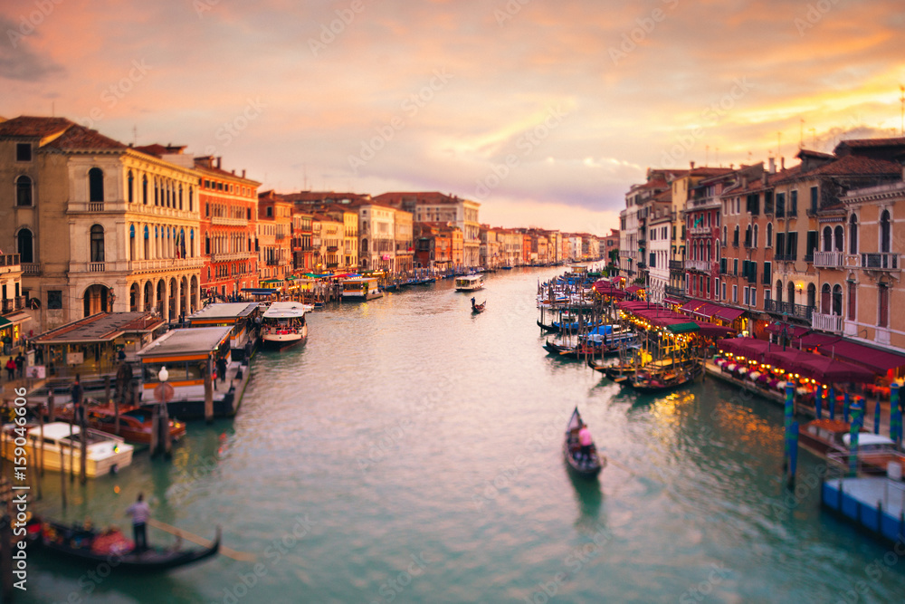
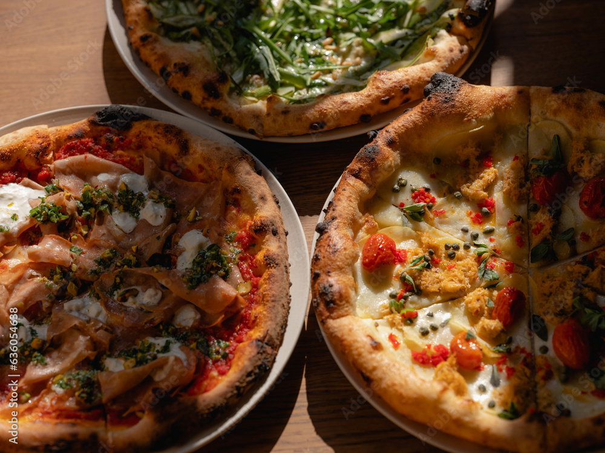

Explorando la Gastronomía Global
Gastronomía Italiana
Aquí veremos información acerca de la Gastronomía Italiana.
 
Tu navegador no admite el elemento de video.
Descargar Recetas
Restaurantes Recomendados
Da Enzo al 29
Giolitti
Regresar a la página principal